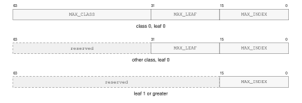
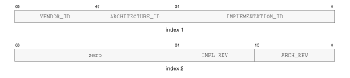
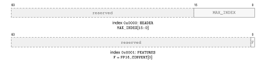
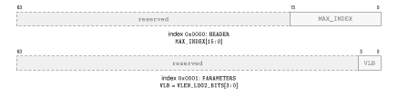
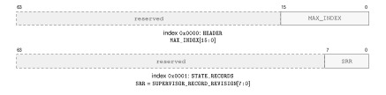
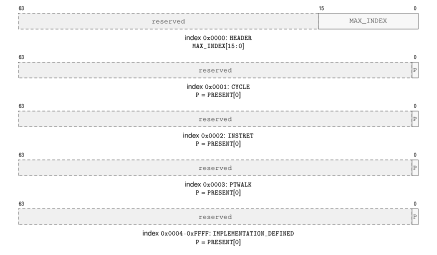
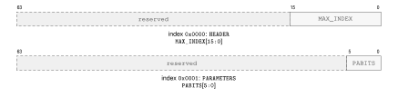
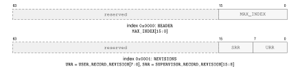
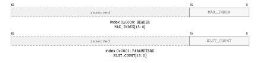

CPUID Feature Discovery
Overview
CPUID is the architectural discovery interface for optional instruction groups, state-record revisions, implementation properties, and feature-specific parameters.
The CPUID instruction uses a selected Rn register as both query selector and result register. Software writes the selector before execution and reads the returned 64-bit value after execution.
CPUID exposes program-visible architectural information.
The normative instruction entry is CPUID.
Query Model
A query selector identifies a discovery class, leaf, and optional result index. The selector is a Q-sized value held in the selected Rn register.
CPUID is unprivileged. For a logical processor, CPUID results remain stable until that logical processor is reset. A discovery result applies to execution on the logical processor that returned it. Software associates cached discovery state with that logical processor and uses results obtained on each logical processor before selecting its optional architectural behavior.
CPUID Query Selector Format
CPUID Query Selector
| Bits | Field | Meaning |
|---|---|---|
0..15 |
index |
result index within the selected leaf |
16..31 |
leaf |
information leaf within the selected class |
32..63 |
class |
CPUID information class |
Index zero of every defined leaf is a common discovery header. Leaf-specific payload begins at index one. An unknown class, leaf, or index returns zero.

CPUID Common Leaf Header Formats
CPUID Common Leaf Header
| Query | Bits 63..32 | Bits 31..16 | Bits 15..0 |
|---|---|---|---|
| class 0, leaf 0, index 0 | MAX_CLASS |
MAX_LEAF |
MAX_INDEX |
| other class, leaf 0, index 0 | reserved, zero | COMMON_HEADER.MAX_LEAF |
COMMON_HEADER.MAX_INDEX |
| any class, leaf 1 or greater, index 0 | reserved, zero | reserved, zero | COMMON_HEADER.MAX_INDEX |
COMMON_HEADER.MAX_CLASS is the greatest class recognized by the implementation, COMMON_HEADER.MAX_LEAF is the greatest leaf recognized within the selected class, and COMMON_HEADER.MAX_INDEX is the greatest index recognized within the selected leaf. Each field gives the greatest recognized selector value. A leaf may be sparse below COMMON_HEADER.MAX_INDEX. Software ignores reserved bits in every returned value.
CPUID bit fields are feature predicates unless the leaf description says they encode a numeric value. Reserved result bits are ignored by software.
A set feature bit only permits software to use the corresponding architectural behavior; the instruction's normal privilege, operand, and availability checks still apply.
Numeric fields use names that describe their unit. State-record revision fields are unsigned format identifiers, not byte counts.
Discovery Classes
Discovery classes partition architectural information by subject. Software first checks the class and leaf directory before consuming optional feature bits.
The base class describes the mandatory scalar ISA and implementation identity. Optional groups are reported in the optional-extension directory.
Leaf Directory
Each discovery class may expose a leaf directory. A directory leaf reports which subordinate leaves are defined and how indexed leaves should be enumerated.
Classes 0x00000000, 0x00000001, and 0x00000002 respectively contain the Bedrock base ISA, optional extensions, and implementation properties.
CPUID Class and Leaf Directory
| Class | Leaf | Name | Indexes | Summary |
|---|---|---|---|---|
0x00000000 |
0x0000 |
BASE_IDENTITY |
0..18 |
common header, identity, revisions, vendor name, and processor name |
0x00000000 |
0x0001 |
BASE_INSTRUCTIONS |
0..1 |
common header and optional base-instruction bits |
0x00000000 |
0x0002 |
BASE_STATE_RECORDS |
0..1 |
common header and base user/supervisor record revisions |
0x00000001 |
0x0000 |
EXTENSION_DIRECTORY |
0..1 |
common header and optional architectural-group bits |
0x00000002 |
0x0000 |
IMPLEMENTATION_DIRECTORY |
0..0 |
common implementation-class header |
0x00000002 |
0x0001 |
CACHE_TOPOLOGY |
0..n |
common header, maintenance granule, and cache-sharing descriptors |
0x00000002 |
0x0002 |
PERFORMANCE_COUNTERS |
0..3 |
common header and standard RDPMC-counter presence |
0x00000002 |
0x0003 |
ADDRESS_WIDTHS |
0..1 |
common header and the implementation physical-address width |
0x00000002 |
0x0006 |
DEBUG_TRIGGERS |
0..1 |
common header and implemented debug-trigger slot count |
Base Identity
Class 0x00000000, leaf 0x0000 reports MAX_LEAF``=0 and MAX_INDEX``=18 in its index-zero header. An implementation recognizing only the classes defined by this specification reports MAX_CLASS``=2; an implementation that recognizes a higher implementation-defined class reports the highest such selector. The base-identity payload is:

CPUID Base Identity Result Formats
Base Identity Indexes
VENDOR_ID selects the vendor namespace in which IMPLEMENTATION_ID is interpreted. IMPLEMENTATION_ID is assigned within that VENDOR_ID namespace. ARCHITECTURE_ID identifies the base ISA definition implemented by the processor, while the (VENDOR_ID, IMPLEMENTATION_ID) pair identifies the implementation.
ARCHITECTURE_REVISION is the unsigned 16-bit revision of the base ISA definition selected by ARCHITECTURE_ID; it does not imply the behavior of any other revision. Optional instruction groups, processor state, and feature-specific parameters are reported separately by their CPUID leaves and feature bits. IMPLEMENTATION_REVISION is an unsigned revision assigned by the vendor and is compared only when both VENDOR_ID and IMPLEMENTATION_ID match.
The name fields are UTF-8 byte strings in increasing index order. Within each 64-bit result, the first byte occupies bits 7..0 and subsequent bytes occupy successively higher bits. A name shorter than 64 bytes is terminated by a zero byte and all remaining bytes are zero. A 64-byte name has no terminator. Producers must not split a multi-byte UTF-8 code point at the field boundary. Consumers stop at that boundary and replace any invalid sequence.
Optional-Extension Directory
Software treats the optional-extension directory as the first availability gate. Before using an optional architectural behavior or consuming one of its parameter leaves, software establishes every extension predicate required by that extension. A result returned by a parameter leaf does not by itself establish extension availability.
Each advertised extension owns exactly one discovery leaf in class 0x00000001. If its availability field is bit \(m\) of directory index \(n\), where \(1 \le n \le 1023\) and \(0 \le m \le 63\), its discovery leaf is \(64(n-1)+m+1\). This relation is one-to-one; an extension with no additional discovery payload still provides the leaf with its index-zero header.
Class 0x00000001, leaf 0x0000 uses the 64-bit query selector 0x0000000100000000 \(\mathbin{|}\,\mathit{index}\), where \(\mathit{index}\) is the 16-bit query index below.
Extension Directory CPUID Query-Index Assignments
| Index | Query |
|---|---|
0x0000 |
HEADER |
0x0001 |
FEATURES |
Extension Directory CPUID Result Formats
Floating-Point Extension Discovery
When FP is available, the floating-point registers, state, event, addressing forms, and instructions defined available subject to their ordinary legality checks and any feature-specific predicates below.
When FP16_CONVERT is available, binary16 conversion is available through every form of FCVTH and FCVTUH, the H forms of FCVTS, and the H forms of FCVTD. It does not advertise binary16 arithmetic. The reported value is stable until reset. Executing one of those forms while FP16_CONVERT is clear raises UNAVAILABLE_INSTRUCTION_EXTENSION before operand or floating-point-state access.
USER_RECORD_REVISION reports the 8-bit floating-point user-state-record revision. When FP is available, this field returns 1. Revision 1 identifies the fixed 192-byte record defined by this specification. Revision values are opaque identifiers: software must not infer ordering or compatibility from their numeric values and must reject an unrecognized revision before using the record format.
Class 0x00000001, leaf 0x0001 uses the 64-bit query selector 0x0000000100010000 \(\mathbin{|}\,\mathit{index}\), where \(\mathit{index}\) is the 16-bit query index below.
Floating-Point Features CPUID Query-Index Assignments
| Index | Query |
|---|---|
0x0000 |
HEADER |
0x0001 |
FEATURES |

Floating-Point Features CPUID Result Formats
Vector-Parameter Discovery
After establishing VECTOR availability, software uses this leaf to obtain the architectural VLEN reported by VLEN_LOG2_BITS. VLEN is \(2^{\text{\hyperref[cpuid-field:vector-cpuid-extensions-vector-parameters-parameters-vlen-log2-bits]{\texttt{VLEN\_\allowbreak{}LOG2\_\allowbreak{}BITS}}}}\) bits and is an implementation-selected power of two from 128 through 2048 bits. It determines vector-register width, predicate storage, the number of lanes for a selected element width, and the size of each vector register and predicate register image. USER_RECORD_REVISION reports the 8-bit vector user-state-record revision. When VECTOR is available, this field returns 1. Revision 1 identifies the VLEN-dependent record defined by this specification. Revision values are opaque identifiers: software must not infer ordering or compatibility from their numeric values and must reject an unrecognized revision before using the record format. This leaf does not establish availability of VECTORFP or any other extension that consumes vector state.
Class 0x00000001, leaf 0x0003 uses the 64-bit query selector 0x0000000100030000 \(\mathbin{|}\,\mathit{index}\), where \(\mathit{index}\) is the 16-bit query index below.
Vector Parameters CPUID Query-Index Assignments
| Index | Query |
|---|---|
0x0000 |
HEADER |
0x0001 |
PARAMETERS |

Vector Parameters CPUID Result Formats
Vector Floating-Point Discovery
Software establishes VECTORFP, VECTOR, and FP through the Optional-Extension Directory before using this extension. This extension defines no additional discovery payload, so its discovery leaf contains only the common header.
Class 0x00000001, leaf 0x0004 uses the 64-bit query selector 0x0000000100040000 \(\mathbin{|}\,\mathit{index}\), where \(\mathit{index}\) is the 16-bit query index below.
Vector Floating-Point Discovery CPUID Query-Index Assignments
| Index | Query |
|---|---|
0x0000 |
HEADER |

Vector Floating-Point Discovery CPUID Result Formats
FPTRANSA Accuracy Discovery
The FPTRANSA predicate requires FP and reports that at least one approximate transcendental contract may be available. Software determines each operation's availability separately from its accuracy-contract result. Class 0x00000001, leaf 0x0002 uses indexes 1 through 0x0044 as a sparse space of stable 16-bit accuracy-contract IDs. Index zero is the common header and reports MAX_INDEX``=0x0044. A contract ID identifies the reference function, input domain, special-value behavior, error metric, exact anchors, and mathematical properties; it is independent of instruction encoding placement. A different tuple of those properties uses a different ID, and a retired ID is not reused. The contracts defined here use CONTRACT_REVISION=1. A changed guarantee, domain, or error metric names a different contract ID. An implementation that advertises a smaller certified ULP bound strengthens the existing contract and retains the same ID and revision.
The sparse ID space reserves 0x0001..0x000F for reduced-domain circular trigonometric functions, 0x0010..0x001F for inverse trigonometric functions, 0x0020..0x002F for hyperbolic and inverse hyperbolic functions, 0x0030..0x003F for exponential functions, and 0x0040..0x004F for logarithmic functions. The low-nibble-zero selector of each family is unassigned, and actual contracts in each family begin at low nibble one.
FPTRANSA Accuracy Result Format
P is PRESENT; REV is CONTRACT_REVISION; the D and S ULP fields use unsigned Q8.8.
FPTRANSA Accuracy Result
| Bits | Field | Meaning |
|---|---|---|
0..15 |
S_MAX_ULP_Q8_8 |
certified worst-case S-format ULP bound, rounded upward to unsigned Q8.8 |
16..31 |
D_MAX_ULP_Q8_8 |
certified worst-case D-format ULP bound, rounded upward to unsigned Q8.8 |
32..39 |
CONTRACT_REVISION |
value 1 for the contracts defined here |
40..62 |
reserved | zero |
63 |
PRESENT |
the instruction and both S and D encodings are available |
For a certified bound \(K\), the field value is \(\lceil 256K\rceil\) and the advertised bound is the field divided by 256. Thus 0.5, 1, 1.5, 2, and 4 ULP encode as 0x0080, 0x0100, 0x0180, 0x0200, and 0x0400. A present contract has both fields in 0x0001..0x0400. An unrecognized returned revision does not satisfy the contracts defined here.
Software first checks FP and FPTRANSA in EXTENSION_DIRECTORY, then queries the intended contract ID in FPTRANSA_ACCURACY. It uses the instruction only when PRESENT is set, the returned CONTRACT_REVISION is 1, and the S or D bound required by the call site is no larger than its quality threshold; otherwise it does not use the instruction under that accuracy contract. For example, a D-format FLOG2A path requiring at most 2 ULP accepts selector 0x0000000100020043 only when the returned D field is at most 0x0200.
The selector is \((\texttt{0x00000001} \ll 32) \mathbin{|} (\texttt{0x0002} \ll 16) \mathbin{|}
\textit{contract-id}\). For example, FSINA uses selector 0x0000000100020001, and FLOG2A uses 0x0000000100020043. An implementation that certifies FSINA at 1.5 ULP for S and 2 ULP for D returns 0x8000000102000180.
PRESENT=1 establishes the accuracy contract for both S and D encodings but does not waive the instruction's ordinary legality checks. The S and D bounds are worst-case bounds over every input in the contract domain and apply to every execution on the logical processor that returned the CPUID result until reset. Executing the instruction with PRESENT=0 raises INVALID_OPERAND_RELATION before operand or floating-point-state access.
FPTRANSA Accuracy Contracts
| Contract ID | Mnemonic | Reference | Domain | ISA maximum |
|---|---|---|---|---|
0x0001 |
FSINA |
sin(x) in radians | finite x with abs(x) \(\leq\) pi / 4 after DAZ | S \(\leq\) 4 ULP; D \(\leq\) 4 ULP |
0x0002 |
FCOSA |
cos(x) in radians | finite x with abs(x) \(\leq\) pi / 4 after DAZ | S \(\leq\) 4 ULP; D \(\leq\) 4 ULP |
0x0003 |
FTANA |
tan(x) in radians | finite x with abs(x) \(\leq\) pi / 4 after DAZ | S \(\leq\) 4 ULP; D \(\leq\) 4 ULP |
0x0004 |
FSINCOSA |
paired sin(x) and cos(x) in radians | finite x with abs(x) \(\leq\) pi / 4 after DAZ | S \(\leq\) 4 ULP; D \(\leq\) 4 ULP |
0x0011 |
FASINA |
asin(x) in radians | finite x with abs(x) \(\leq\) 1 after DAZ | S \(\leq\) 4 ULP; D \(\leq\) 4 ULP |
0x0012 |
FACOSA |
acos(x) in radians | finite x with abs(x) \(\leq\) 1 after DAZ | S \(\leq\) 4 ULP; D \(\leq\) 4 ULP |
0x0013 |
FATANA |
atan(x) in radians | all finite values and signed infinity after DAZ | S \(\leq\) 4 ULP; D \(\leq\) 4 ULP |
0x0021 |
FSINHA |
sinh(x) | all finite values and signed infinity after DAZ | S \(\leq\) 4 ULP; D \(\leq\) 4 ULP |
0x0022 |
FCOSHA |
cosh(x) | all finite values and signed infinity after DAZ | S \(\leq\) 4 ULP; D \(\leq\) 4 ULP |
0x0023 |
FTANHA |
tanh(x) | all finite values and signed infinity after DAZ | S \(\leq\) 4 ULP; D \(\leq\) 4 ULP |
0x0024 |
FATANHA |
atanh(x) | finite x with abs(x) \(\leq\) 1 after DAZ | S \(\leq\) 4 ULP; D \(\leq\) 4 ULP |
0x0031 |
FETOXA |
\(e^x\) | all finite values and signed infinity after DAZ | S \(\leq\) 4 ULP; D \(\leq\) 4 ULP |
0x0032 |
FETOXM1A |
\(e^x-1\) without an intermediate rounded exponential | all finite values and signed infinity after DAZ | S \(\leq\) 4 ULP; D \(\leq\) 4 ULP |
0x0033 |
FTWOTOXA |
\(2^x\) | all finite values and signed infinity after DAZ | S \(\leq\) 4 ULP; D \(\leq\) 4 ULP |
0x0034 |
FTENTOXA |
\(10^x\) | all finite values and signed infinity after DAZ | S \(\leq\) 4 ULP; D \(\leq\) 4 ULP |
0x0041 |
FLOGNA |
ln(x) | positive finite values and positive infinity after DAZ; signed zero is the DZ boundary | S \(\leq\) 4 ULP; D \(\leq\) 4 ULP |
0x0042 |
FLOGNP1A |
ln(1 + x) without an intermediate rounded addition | finite x \(\geq -1\) and positive infinity after DAZ; \(-1\) is the DZ boundary | S \(\leq\) 4 ULP; D \(\leq\) 4 ULP |
0x0043 |
FLOG2A |
log2(x) | positive finite values and positive infinity after DAZ; signed zero is the DZ boundary | S \(\leq\) 4 ULP; D \(\leq\) 4 ULP |
0x0044 |
FLOG10A |
log10(x) | positive finite values and positive infinity after DAZ; signed zero is the DZ boundary | S \(\leq\) 4 ULP; D \(\leq\) 4 ULP |
WAIT Extension Discovery
Software establishes the WAIT extension predicate before executing WAIT or WAKE. The extension has no implementation-varying architectural parameters.
Class 0x00000001, leaf 0x0005 uses the 64-bit query selector 0x0000000100050000 \(\mathbin{|}\,\mathit{index}\), where \(\mathit{index}\) is the 16-bit query index below.
Address Wait Discovery CPUID Query-Index Assignments
| Index | Query |
|---|---|
0x0000 |
HEADER |
Address Wait Discovery CPUID Result Formats
CFI Extension Discovery
Software establishes the CFI extension predicate before using CFILAND or another CFI instruction. SUPERVISOR_RECORD_REVISION reports the 8-bit CFI supervisor-state-record revision. When CFI is available, this field returns 1. Revision 1 identifies the fixed 16-byte key record. Revision values are opaque identifiers and software must reject an unrecognized revision before using the record format.
Class 0x00000001, leaf 0x0006 uses the 64-bit query selector 0x0000000100060000 \(\mathbin{|}\,\mathit{index}\), where \(\mathit{index}\) is the 16-bit query index below.
Control-Flow Integrity Discovery CPUID Query-Index Assignments
| Index | Query |
|---|---|
0x0000 |
HEADER |
0x0001 |
STATE_RECORDS |

Control-Flow Integrity Discovery CPUID Result Formats
Implementation-Class Directory
Class 0x00000002, leaf 0x0000 uses the 64-bit query selector 0x0000000200000000 \(\mathbin{|}\,\mathit{index}\), where \(\mathit{index}\) is the 16-bit query index below.
Implementation Directory CPUID Query-Index Assignments
| Index | Query |
|---|---|
0x0000 |
HEADER |
Implementation Directory CPUID Result Formats
Cache-Topology Discovery
Class 0x00000002, leaf 0x0001 reports the cache-maintenance granule and the cache instances visible to the current logical processor. Index zero is the common header. Index one is the maintenance-properties result, and indexes 2 through MAX_INDEX are a dense array of cache descriptors. With \(N\) descriptors, MAX_INDEX=1+N.
Cache-Maintenance Properties Result
GRANULE is MAINTENANCE_GRANULE_BYTES.
Cache-Maintenance Properties
| Index | Bits | Field | Meaning |
|---|---|---|---|
| 1 | 15..0 |
MAINTENANCE_GRANULE_BYTES |
one-block cache-maintenance granule in bytes |
| 1 | 63..16 |
reserved | zero |
Cache-Topology Descriptor Format
SID, LP-1, SL, LL2, LV, and T denote SHARING_ID, SHARING_LP_COUNT_MINUS1, SHARING_LEVEL, LINE_LOG2, LEVEL, and TYPE.
Cache-Topology Descriptor
| Bits | Field | Meaning |
|---|---|---|
1..0 |
TYPE |
1 data; 2 instruction; 3 unified |
5..2 |
LEVEL |
cache level, in the range 1 through 15 |
11..6 |
LINE_LOG2 |
cache-line bytes are 1 shifted left by this value |
15..12 |
SHARING_LEVEL |
nested cache-sharing scope; zero is one logical processor |
31..16 |
SHARING_LP_COUNT_MINUS1 |
logical-processor count in the sharing scope, minus one |
63..32 |
SHARING_ID |
identifier of the processor set at the reported sharing level |
MAINTENANCE_GRANULE_BYTES is a nonzero power of two no greater than 4096 and has the same value on every logical processor in one normal-memory coherence domain. Every reported cache-line size divides the maintenance granule. A descriptor has TYPE 1, 2, or 3 and a nonzero LEVEL. Descriptors are ordered by increasing cache level, cache type, sharing level, and sharing ID.
SHARING_LEVEL values describe strictly nested processor sets. The pair (SHARING_LEVEL, SHARING_ID) is equal exactly when two descriptors name the same logical-processor set. At sharing level zero, SHARING_LP_COUNT_MINUS1 is zero. At a greater sharing level, the count field equals the number of logical processors in that set minus one. The tuple of cache type, cache level, sharing level, and sharing ID is unique within the leaf.
Performance-Counter Discovery
This leaf determines whether an RDPMC counter ID is available on the current logical processor. Counter IDs form a sparse space: the header bounds the selectors that software may examine but does not imply that every intervening ID is present. Software checks the selected ID before issuing RDPMC.
The standard counter events are defined by RDPMC. An implementation-defined counter additionally requires implementation documentation that names the event counted by its ID.
Class 0x00000002, leaf 0x0002 uses the 64-bit query selector 0x0000000200020000 \(\mathbin{|}\,\mathit{index}\), where \(\mathit{index}\) is the 16-bit query index below.
Performance Counters CPUID Query-Index Assignments
| Index | Query |
|---|---|
0x0000 |
HEADER |
0x0001 |
CYCLE |
0x0002 |
INSTRET |
0x0003 |
PTWALK |
0x0004--0xFFFF |
IMPLEMENTATION_DEFINED |

Performance Counters CPUID Result Formats
Address-Width Discovery
PABITS is the authoritative physical-address bound for the current logical processor and has a value from 32 through 56. A physical address is representable only when it is less than \(2^{\text{\hyperref[cpuid-field:base-cpuid-implementation-address-widths-parameters-pabits]{\texttt{PABITS}}}}\). Page-table roots, every present leaf PTE.PFN, every present table-pointer PTE.NEXT_TABLE, translated results, and paging-disabled physical addresses are subject to that bound.
PABITS does not select a translation-table format or translation-cache identity. PTCR.TT selects the complete translation-table format, while the translation-cache contract separately defines entry identity.
Class 0x00000002, leaf 0x0003 uses the 64-bit query selector 0x0000000200030000 \(\mathbin{|}\,\mathit{index}\), where \(\mathit{index}\) is the 16-bit query index below.
Address Widths CPUID Query-Index Assignments
| Index | Query |
|---|---|
0x0000 |
HEADER |
0x0001 |
PARAMETERS |

Address Widths CPUID Result Formats
Base State-Record Revisions
The BASE_STATE_RECORDS leaf reports independent 8-bit format revisions for the base user and base supervisor records. This specification provides revision 1 for both records, so both fields return 1. Revision 1 identifies the fixed layouts defined by this specification.
State-record revision values are opaque identifiers: software must not infer ordering or compatibility from their numeric values. Software must reject an unrecognized revision before using the corresponding record format.
Record sizes and alignments are architectural properties of the reported revision and are not repeated in CPUID.
Class 0x00000000, leaf 0x0002 uses the 64-bit query selector 0x0000000000020000 \(\mathbin{|}\,\mathit{index}\), where \(\mathit{index}\) is the 16-bit query index below.
Base State Records CPUID Query-Index Assignments
| Index | Query |
|---|---|
0x0000 |
HEADER |
0x0001 |
REVISIONS |

Base State Records CPUID Result Formats
Timebase Discovery
The mandatory architectural timebase advances at the exact nonzero integer rate reported by TICKS_PER_SECOND. The value is invariant for one cold-reset epoch and is preserved by warm RESET. Software uses this rate to convert differences between RDTIME results and absolute deadline values into elapsed time.
Class 0x00000002, leaf 0x0005 uses the 64-bit query selector 0x0000000200050000 \(\mathbin{|}\,\mathit{index}\), where \(\mathit{index}\) is the 16-bit query index below.
Architectural Timebase CPUID Query-Index Assignments
| Index | Query |
|---|---|
0x0000 |
HEADER |
0x0001 |
PARAMETERS |
Architectural Timebase CPUID Result Formats
Debug-Trigger Discovery
The mandatory Base trigger array has at least four slots per logical processor. SLOT_COUNT reports the exact number accepted by DTRSEL.SLOT; software does not probe selector values beyond that count.
Class 0x00000002, leaf 0x0006 uses the 64-bit query selector 0x0000000200060000 \(\mathbin{|}\,\mathit{index}\), where \(\mathit{index}\) is the 16-bit query index below.
Architectural Debug Triggers CPUID Query-Index Assignments
| Index | Query |
|---|---|
0x0000 |
HEADER |
0x0001 |
PARAMETERS |

Architectural Debug Triggers CPUID Result Formats